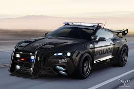
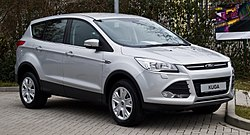

Більше інформації дізнайтесь тут
Характеристики автомобіля форд куга другого покоління

При появі першого покоління Ford Kuga на ринку склалася доволі складна ситуація, оскільки більшість автолюбителів обирали для користування дизельні автомобілі, адже вони були дешевші в користуванні. З 2008 року багато чого змінилося, вже починаючи
з так званого «розлучення» Ford і Volvo. Тому звичної всім турбоп'ятірки під капотом цього авто вже немає. Також інженери відмовилися від використання в приводі задніх коліс муфти Haldex. Замість неї вони прилаштували свою власну розробку
— Active Torque Coupling
Для подальшого користування заповніть анкету